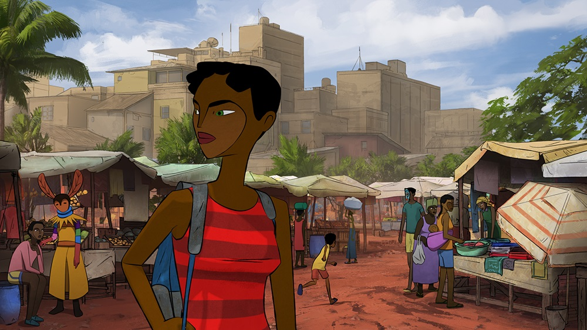

Of all the feature films I saw at 2023's OIAF, "Nayola" is probably the most interesting. Flawed, but interesting. It's set in two different time periods, against the backdrop of a real-life civil war in Angola. In 1995, Nayola is a mother and young woman who's husband fighting in the war goes missing: she takes it upon herself to traverse through the battlefields as a soldier to find him. In 2011, we see a completely different setting post-war, in the city slums - Yara is a teenage woman fighting to find her place in the world. Living in her grandmother's home, a masked stranger, like a demon, appears in their kitchen one day. The first time period with Nayola is truly fascinating, beautiful and haunting, full of danger and drama. Her strength and determination in some difficult moments are remarkable. If the entire movie was like this, focusing solely on her, it would be a powerful directorial work. It uses 2D animation to good effect with limited means, with a strong stylistic design in the characters and vibrant rustic-painterly strokes for the backgrounds. Unfortunately, we have the second period interwoven with the first. It uses CGI for character animation instead of 2D, which is able to reproduce the character designs, but otherwise is a clear indication of a problem. Yara herself is immensely frustrating compared to Nayola, despite both being of similar age. Yara wants to be a rap-musican, spitting beats on rooftops with her crew, and distributing mixtape CD's of her work on the streets to "spread her message." She's a rebel without a cause, wanting to "fight against the establishment" without being able to explain why, walking around in her underwear in her grandmother's house while asking what became of her real mother. She's an insolent child, and I wanted to yell at her to grow up.  It's only when the masked stranger visits Yara in their house that the tone changes to surrealism, and the two periods become connected. For a moment, it becomes a tense mystery with an air of danger of the stranger's intentions. It helps, but I was still frustrated with Yara, and she doesn't seem poised to grow or change at all by the time the film is over. I wasn't sure what to make of that. Was the mother at fault for abandoning Yara and not properly raising her? Or was this an indication of another woman finding her own journey and her own reason to "fight?" If Nayola abandoned a child to find her husband, was this sacrifice worth it?"Nayola" is still an impressive production, highlighting the strengths of the director. But it's a tale of two women, and for all the strengths in one, weaknesses in the other weigh it down.
- "Ani" More reviews can be found at : https://2danicritic.github.io/ Previous review: review_Nausicaa_of_the_Valley_of_the_Wind Next review: review_Neon_Genesis_Evangelion